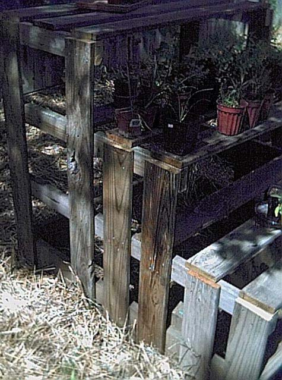
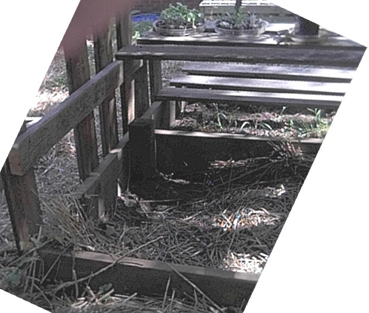

Seedling Shelves


The plans are as a PDF and as a PPT. The following instructions should be used in
conjunction with the PDF document.
Before beginning this project please take a look at the following pages. These pages contain things about simple
carpentry I learned. When you are finished you can visit the Main Page:
1) Wood Is Not The Size They say it is
2) The right tools are important, and they really
don't cost that much
3) Technique, a few hints and tricks help make the
job go easier.
This Structure IS NOT For Sitting OR Standing On
It is built ONLY for the weight of light plants NOT FOR PEOPLE
This is a structure requested by the gardeners in the family. They got serious about
starting perennials from seed this past year, and quickly ran out of room to set the
seedlings out on tabletops in sunny areas as they developed healthy root systems. We
devised this stair-step structure to provide proper light exposure for a variety of plants
of various sizes. Some plants need a little less sun than others and did well on the
back edges of the shelves. Others like full sun as much of the day as
possible. The steps are also easier on the back than bending over and working at
ground level.
Page 1 - First cut the bottom level frame, 2 Ea. 72" sides and 3 Ea. 45" front, back and middle
boards. Butt the back board up
against a step, make sure this is a large flat surface to work on. Put
the two side boards up against the back board, they should be against the ends
of the back board. Put the front board at the front. You should now have a square frame (see
the first page of the document).
Make sure that the box looks square.
If you need help seeing if the box is "square", cut your 7.5 X
3.5 X 3.5" corner posts and put them in the corner. They should be nice and even.
Drill your pilot holes in and screw in the deck screws. I would suggest two
or three screws per board. When you have the front board secured
to the side boards, rotate everything 180 degrees and then attach the back
board to the side boards.
Next take your last 45" board and place it in the middle. Put it somewhere in the center
where it is snug. Drill your deck screws in to secure this board in place.
Next secure the corner posts. These help stabilize the frame.
Page 2 - Next cut the three boards that go on top of the frame and screw them to the frame.
Page 3 - Cut the two 1.5 by 3.5 by 56" boards and the two 1.5 by 3.5 by 40" boards.
Cut your six 1 by 5.5 by 48" boards. Brace the ends of the two 1.5 by 3.5 by 56"
boards against a step. These boards should not be sitting with the wide edge on the pavement, they should be
sitting on the skinniest side. Put one of the 48" boards on each end. This will help you gauge how
far apart the 1.5 by 3.5 boards should be. Put deck screws in the 1 by 5.5" board closest to you to
secure the three boards together. Put the next board next to the board at the end that you just screwed
in but make sure there is a 3.75" gap between the boards. Take the last board (the one you put on the
other end to make sure that the 1.5 by 3.5" boards were straight) and put that
next to the board you just screwed in again making sure that you leave a 3.75" gap between the boards.
It should now look like the first shelf on page 3.
Do the same with the two 1.5 by 3.5 by 40" boards. You should now have two shelves that look like
page three of the plans.
Page 4 - Now make the last (top) shelf with two 1.5 by 3.5 by 56" boards and two 1 by 5.5 by 48" boards.
Cut the 12 support boards (four each 1 by 5.5 by 21", four each 1 by 5.5 by 35" and four each 1 by 5.5 by
49"). Turn the bottom frame on its side. Clamp the 21" boards in place on one side, clamp the
21" boards to shelf 2. Attach these two boards to the bottom frame and to shelf 2. Clamp the 35"
boards in place on one side, clamp the 35" boards to shelf 3. Attach these two boards to the bottom frame and to
shelf 2 and shelf 3. Clamp the 49" boards in place on one side, clamp the 49" boards to shelf 4.
Attach these two boards to the bottom frame and to shelf 2, shelf 3 and shelf 4.
You now have all the boards on one side attached to all four shelves. The other side is just hanging free. Turn
the unit over so that the side that you just attached all the boards on is now on the ground. All four shelves are
now free floating. Attach the other six boards that are left in the correct place. When you have finished this you
now have a plant stand.
As always feel free to send me comments (my e-mail address is on the main page).
Main Page